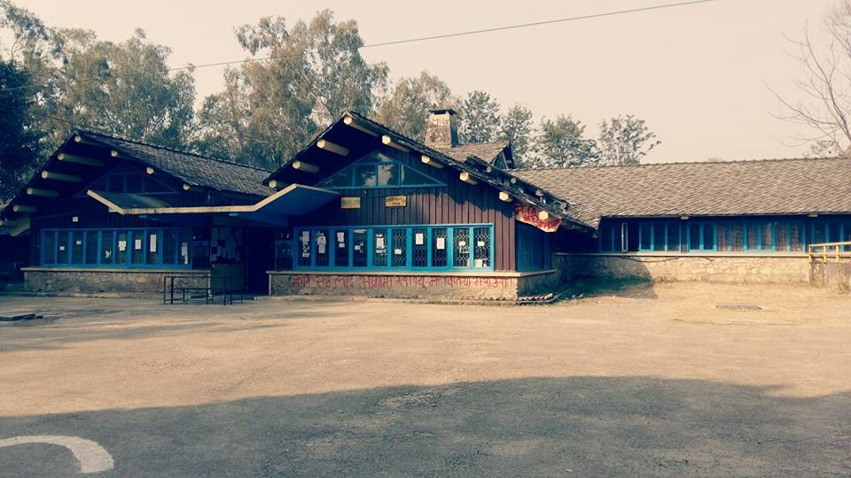

Sanothimi Campus is located at heart of Madhyapur Thimi Muncipality. This campus was established with the aim of producing vocational technicians and teachers with the name of National Vocational Training Center (NVTC) in 2024 B.S. Later on 2029, this campus was affiliated to Tribhuvan University in the name of Sanothimi Campus after the implementation National Educational System Plan (NESP- 2008).
It began to produce trained teachers for vocational education according to the newly introduced curriculum (2028) in the school level. In 2038 the NESP curriculum has been reviewed, the nature and weightage for this subject has been changed, and less emphasis was given to vocational education. As a result, number of the student in vocational education was decreased then the campus started to run general education program in Bachelor and Master level till now.
Now this campus has been offering various subjects (courses) for specialization. The subjects of specialization in bachelor level are English, Mathematics, Science, population , Health & physical education, Nepali, Home science, Industrial, Political science, Economics Geography, Primary education, Early childhood development, Informal educational Administration & Supervision, Nepali education and newly offered curriculum ICT education as well .
Similarly, in master level ICT Ed., EPM, Curriculum, Health and Mathematics education has been offered. It is the matter of proud that sanothimi campus has started Information and Communication Technology Education (ICT Ed) in Bachelor level from 2065 onwards. Our first batch students of ICT Ed. have been graduated in 2070. We have started M.Ed. semester system in three subjects viz Nepali, Health, and Cirriculum and Evaluation education in Open and Distance Learning(ODL) mode from this year.
The M.Ed. in above subjects is started from Ashoj 2070. The total number enrolled in M.Ed. through ODL mode are 42 (Forty Two) . Similarly, we have enrolled first batch of M.Ed. ICT in this current year 2070.